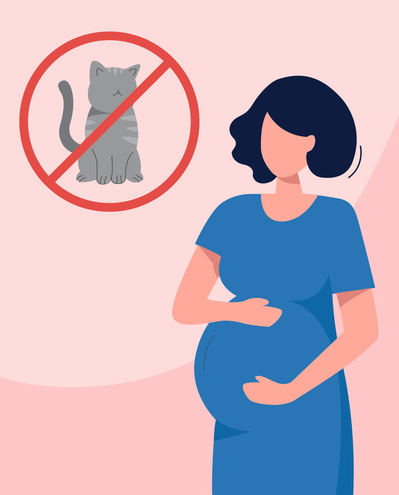

Seguridad de la Granja
Visitar un complejo agrícola de libre interacción representa una experiencia didáctica de alto valor, pero exige una estricta mitigación de riesgos sanitarios y operativos. Nuestra organización implementa sistemas avanzados de control que garantizan la integridad de las comitivas corporativas, acatando inspecciones diarias de bioseguridad, adaptando infraestructura confinada para visitantes y manteniendo una constante supervisión por personal técnico cualificado.
Manual de Procedimientos y Normativas
Control de Ingesta Externa
Queda estrictamente prohibido el ingreso de alimentos o bebidas ajenos al complejo para preservar el equilibrio nutricional y evitar contaminación cruzada en las especies.
Higienización Profiláctica
Es mandatorio realizar el lavado e higienización de manos inmediatamente posterior al contacto con ejemplares o perímetros de confinamiento, repitiendo el proceso antes de consumir alimentos o hacer uso de áreas comunes.
Zonas de Exclusión de Contacto
Mantenga los límites de seguridad corporal alejados del área maxilar de los animales. Se prohíbe taxativamente suministrar alimento manual a équidos, asnos y suinos.
Zonas Críticas (Granero)
Al ingresar al recinto cerrado, aplique los criterios máximos de sanitización. Si realiza cambio de calzado, repita la desinfección. Los contenedores de suministro biológico deben permanecer en los racks exteriores.
Análisis de Riesgo Epidemiológico
Vigilancia Preventiva contra la Toxoplasmosis
La toxoplasmosis representa una patología infecciosa provocada por la transferencia del parásito *Toxoplasma gondii*, presente de forma encauzada en las deyecciones de felinos no controlados o tejidos cárnicos vectores.
Durante los ciclos estacionales de partos de ganado ovino y caprino, los fluidos biológicos pueden actuar como portadores de carga zoonótica activa. Nuestra normativa interna obliga al aislamiento inmediato de vectores y al uso estricto de barreras profilácticas para mitigar la sintomatología común asociada: cuadros febriles agudos, linfoadenopatías y afecciones gastrointestinales.
